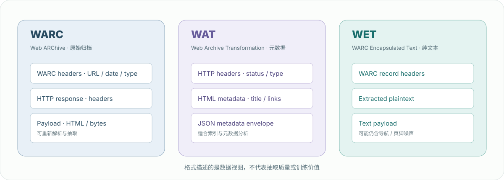
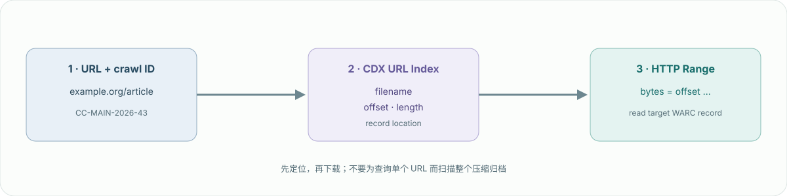

MODULE 02 / LLM DATA ENGINEERING
Common Crawl 数据采集
理解公开网页归档的 WARC、WAT、WET 格式，并学会用 URL 索引定位归档中的具体字节范围。
如何从 Common Crawl 的海量归档中，准确定位一个网页的原始响应，而不是盲目下载整个快照？
Common Crawl 是公开网页归档，不是“整个互联网”
Common Crawl 是持续更新的公开网页抓取归档。每个 crawl 使用独立标识（例如 CC-MAIN-2026-43），其数据可通过公开存储与索引访问。它覆盖了大量可抓取网页，但不等于互联网全量，也不保证覆盖所有地区、语言、登录后内容或客户端渲染后的页面。
官方提供的数据入口包括 Get Started、URL Index Server 和 data.commoncrawl.org。生产任务应先选定 crawl，再读取该 crawl 的索引和文件清单。
WARC、WAT、WET：三种视角，不是三种“质量等级”

| 格式 | 主要内容 | 适合任务 | 容易误解的地方 |
|---|---|---|---|
| WARC | 原始抓取归档，包含 response、request、metadata 等记录 | 重新解析 HTML、检查响应头、进行定制正文抽取 | 不是“一个文件等于一个网页”；一个归档文件包含大量记录 |
| WAT | 从 WARC 记录派生的 JSON 元数据，如 HTTP 头、HTML 元信息和链接 | 元数据分析、链接分析、快速筛选 | 它不是完整 HTML，也不是正文文本 |
| WET | WARC Encapsulated Text，带有 WARC 头的纯文本记录 | 只需文本时快速读取、基线实验 | 标签移除不等于主内容抽取，可能保留菜单、页脚和模板文字 |
先查索引，再取字节范围
如果目标是某个 URL，合理路径不是把几十 GB 的 WARC 文件下载到本地后再全文搜索，而是先查询 URL 索引。索引结果会提供记录所在的 WARC 文件、字节偏移量和长度等定位信息。拿到定位信息后，才对归档文件发起 HTTP Range 请求。

示例：查询某个 crawl 的索引（以官方索引 API 的实际参数为准）：
curl "https://index.commoncrawl.org/CC-MAIN-2026-43-index?url=example.com%2F&output=json"索引返回后，使用其中的 filename、offset、length 定位记录：
import requests
filename = "crawl-data/CC-MAIN-2026-43/segments/..."
offset = 123456
length = 7890
url = "https://data.commoncrawl.org/" + filename
headers = {"Range": f"bytes={offset}-{offset + length - 1}"}
response = requests.get(url, headers=headers, timeout=60)
response.raise_for_status()
# 检查服务端是否返回部分内容，并校验响应区间与长度。
assert response.status_code == 206
record_bytes = response.content
assert len(record_bytes) == length上面的 filename、offset 和 length 是占位示例，不是真实记录。批量任务优先使用官方提供的列式索引或离线索引，避免对公共 URL 索引服务发起高并发扫描。
用 warcio 读取 WARC 记录
WARC 文件通常以 gzip 压缩。ArchiveIterator 会逐条遍历归档记录；应先筛选 response，再检查 HTTP 状态码和 Content-Type。下面示例只展示“读取与筛选”的最小骨架，不包含分布式调度、字符集检测和完整异常恢复。
from warcio.archiveiterator import ArchiveIterator
warc_path = "CC-MAIN-2026-43-00000.warc.gz"
with open(warc_path, "rb") as stream:
for record in ArchiveIterator(stream):
if record.rec_type != "response":
continue
url = record.rec_headers.get_header("WARC-Target-URI")
http_headers = record.http_headers
if http_headers is None:
continue
status = http_headers.get_statuscode()
content_type = http_headers.get_header("Content-Type") or ""
if status != "200" or "text/html" not in content_type.lower():
continue
payload = record.content_stream().read()
print(url, len(payload))规模化处理时最常见的五个坑
- 把快照当成永久 URL 状态：同一个 URL 在不同 crawl 时间点可能内容不同、重定向或失效。
- 把 WET 当作“干净正文”：它是纯文本视图，不等于高精度主内容抽取。
- 只存 URL，不存 crawl 与 WARC 定位：这会让后续复现和差异分析变得困难。
- 把单条记录读取代码当成集群流水线：大规模任务还需要分片、重试、背压、去重和可观测性。
- 忽略访问规则和负载：公共索引服务不适合被当作无限速率的批量扫描接口。
交互练习：按任务选择格式
WARC：需要重新解析网页、检查 HTTP 响应或尝试不同正文提取器时，优先从原始记录开始。
本章参考资料
- Common Crawl · Get Started：数据访问与 WARC/WAT/WET 格式说明。
- Common Crawl Index Server：URL 索引查询入口。
- IIPC WARC Specifications：WARC 标准资料。
- Penedo et al. (2024), FineWeb §3.2 Text extraction：WARC / WET 对照实验。